Code
library(patchwork)Performing basic exploratory data analysis with assistance from LLMs
Using various LLMs for coding assistance
Needed to install some of the referenced packages
Code for plotting output
library(patchwork)# Load necessary libraries
library(tidyverse)
library(palmerpenguins)
library(ggplot2)
library(GGally) # Was not included in the original code output
# Load the penguins dataset
data("penguins")
# Preview the dataset
glimpse(penguins)
# Data Cleaning and Processing
# Remove rows with missing values
penguins_clean <- penguins %>%
drop_na()
# Convert necessary columns to appropriate data types
penguins_clean <- penguins_clean %>%
mutate(species = factor(species),
island = factor(island),
sex = factor(sex))
# Summary statistics
summary(penguins_clean)# Exploratory Data Analysis (EDA)
# Distribution of species
ggplot(penguins_clean, aes(x = species)) +
geom_bar(fill = "steelblue") +
labs(title = "Distribution of Penguin Species", x = "Species", y = "Count")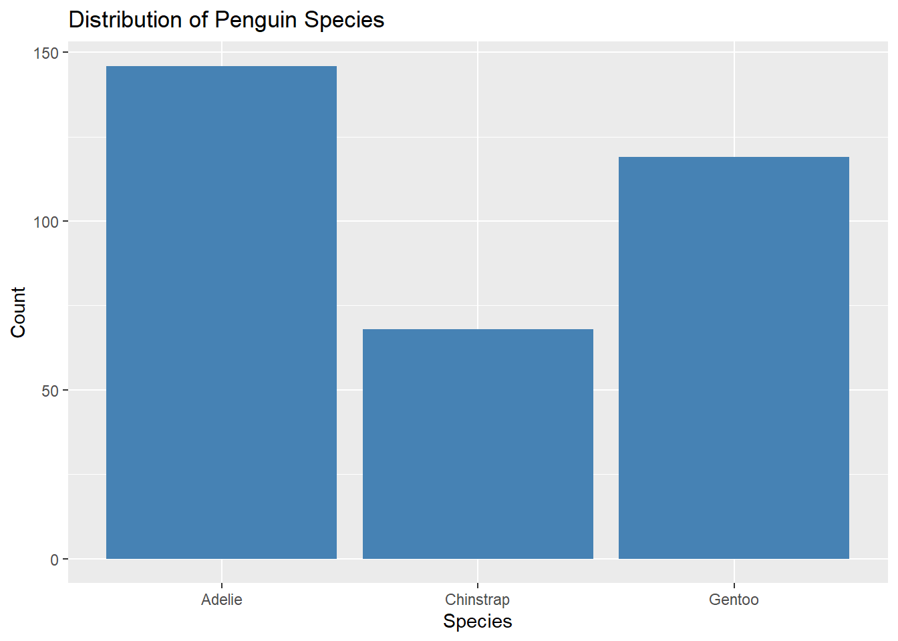
# Distribution of flipper length by species
ggplot(penguins_clean, aes(x = species, y = flipper_length_mm, fill = species)) +
geom_boxplot() +
labs(title = "Flipper Length by Species", x = "Species", y = "Flipper Length (mm)") +
theme(legend.position = "none")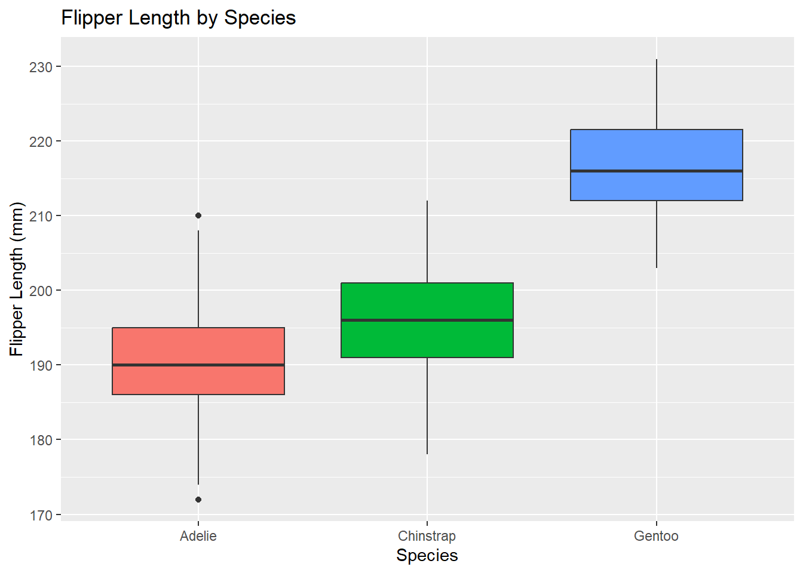
# Relationship between flipper length and body mass
ggplot(penguins_clean, aes(x = flipper_length_mm, y = body_mass_g, color = species)) +
geom_point(alpha = 0.7) +
labs(title = "Relationship between Flipper Length and Body Mass",
x = "Flipper Length (mm)", y = "Body Mass (g)")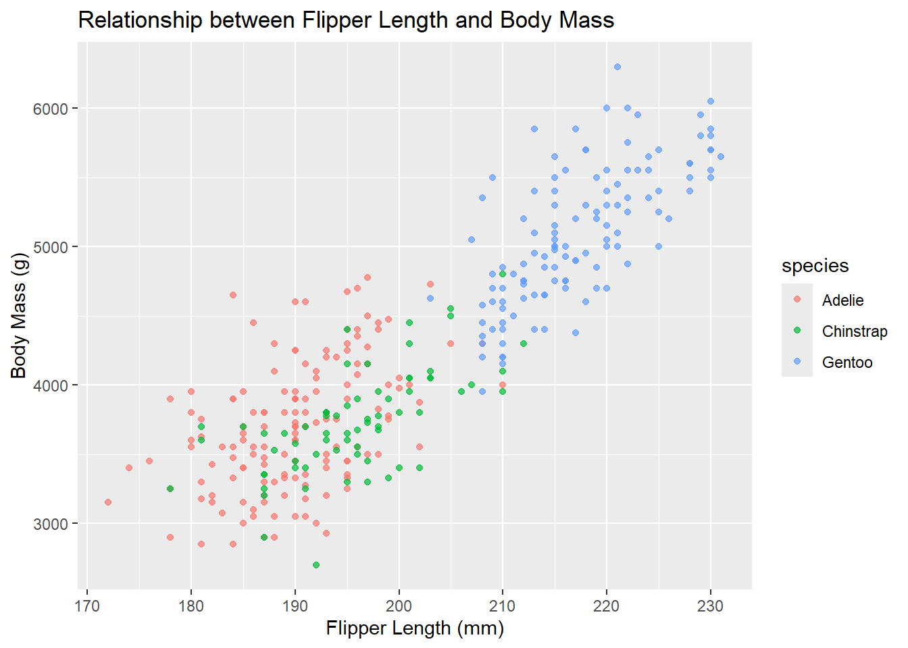
# Pairwise scatter plots
penguins_clean %>%
select(bill_length_mm, bill_depth_mm, flipper_length_mm, body_mass_g) %>%
ggpairs(aes(color = penguins_clean$species, alpha = 0.7),
upper = list(continuous = wrap("cor", size = 3)),
lower = list(continuous = wrap("points", size = 0.5))) +
theme_bw() +
labs(title = "Pairwise Scatter Plots of Penguin Measurements")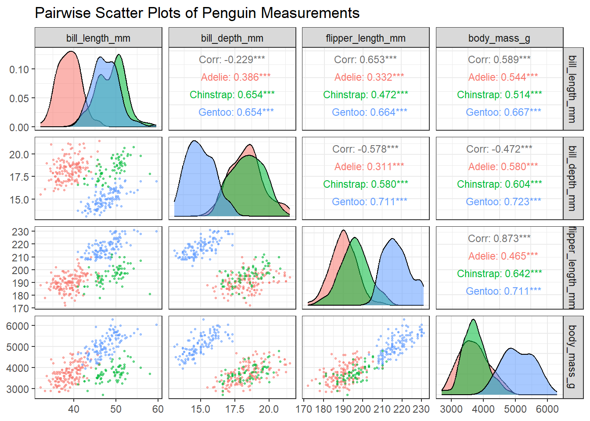
# Density plot of body mass by species and sex
ggplot(penguins_clean, aes(x = body_mass_g, fill = species)) +
geom_density(alpha = 0.5) +
facet_wrap(~ sex) +
labs(title = "Density Plot of Body Mass by Species and Sex",
x = "Body Mass (g)", y = "Density")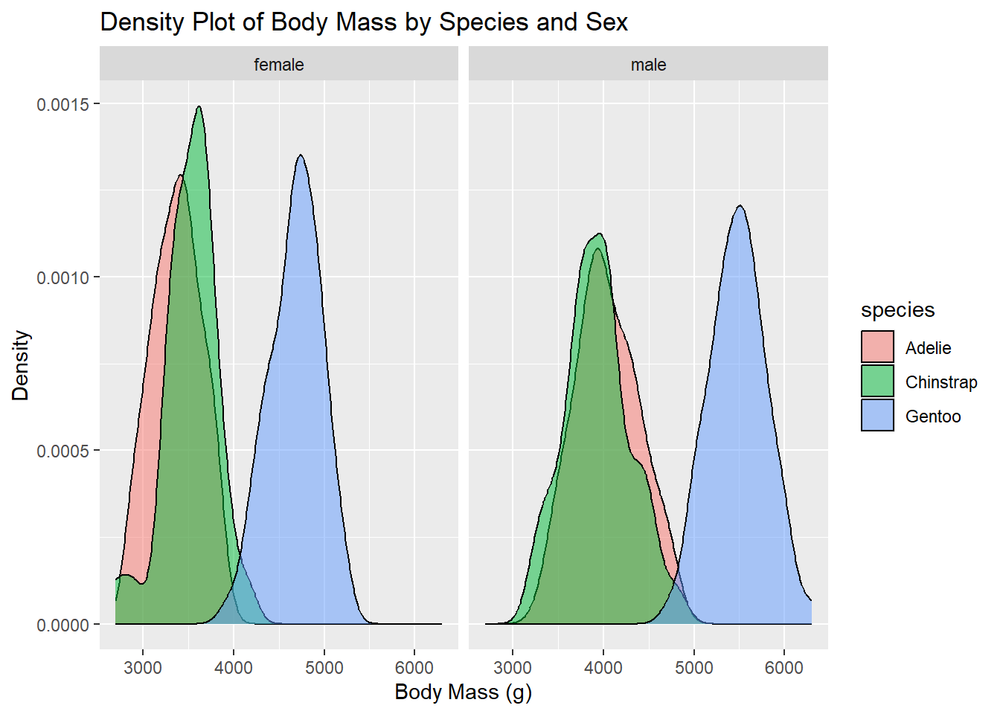
# Save cleaned dataset for further analysis
# write_csv(penguins_clean, "cleaned_penguins_dataset.csv")
# Additional analysis can be performed as needed# Load necessary libraries
library(tidyverse)
library(palmerpenguins)
# Read the penguins dataset (assuming it's already loaded or available)
# Replace 'penguins.csv' with the actual file path if needed
# Load the penguins dataset
data("penguins")
# Check the structure of the dataset
str(penguins)
# Summary statistics
summary(penguins)
# Data cleaning: Remove missing values
penguins_clean <- penguins %>%
drop_na()# EDA: Create scatter plots
ggplot(penguins_clean, aes(x = bill_length_mm, y = bill_depth_mm, color = species)) +
geom_point() +
labs(x = "Bill Length (mm)", y = "Bill Depth (mm)", title = "Penguins Bill Measurements")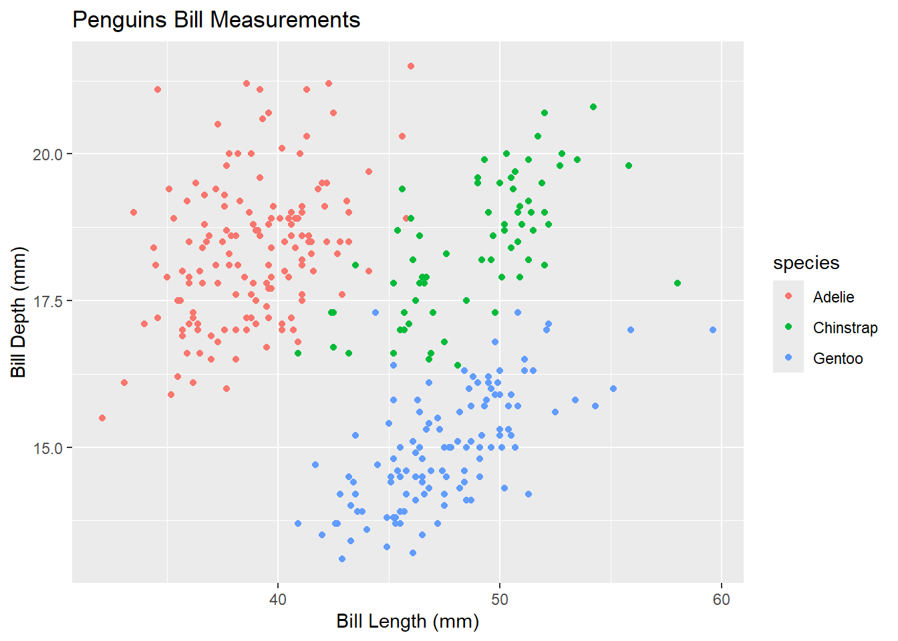
# Boxplots
ggplot(penguins_clean, aes(x = species, y = flipper_length_mm)) +
geom_boxplot() +
labs(x = "Species", y = "Flipper Length (mm)", title = "Flipper Length by Species")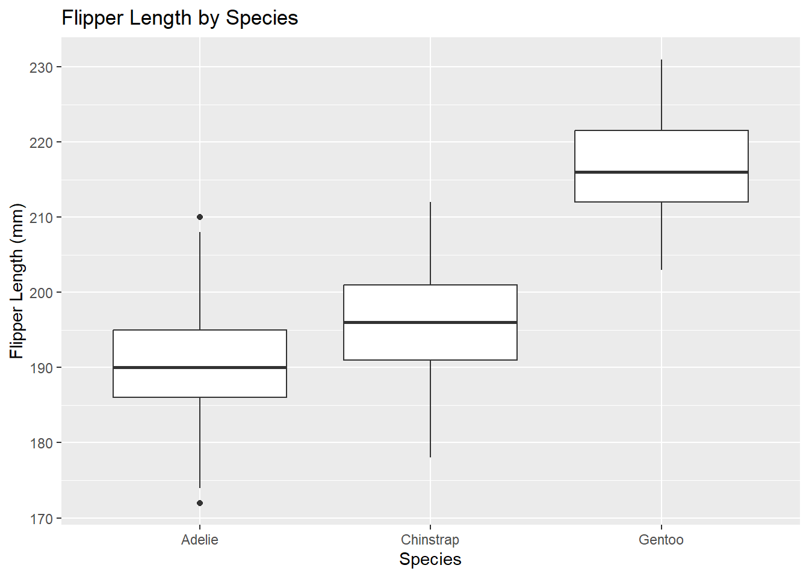
# Histograms
ggplot(penguins_clean, aes(x = body_mass_g)) +
geom_histogram(binwidth = 100, fill = "skyblue", color = "black") +
labs(x = "Body Mass (g)", y = "Frequency", title = "Distribution of Body Mass")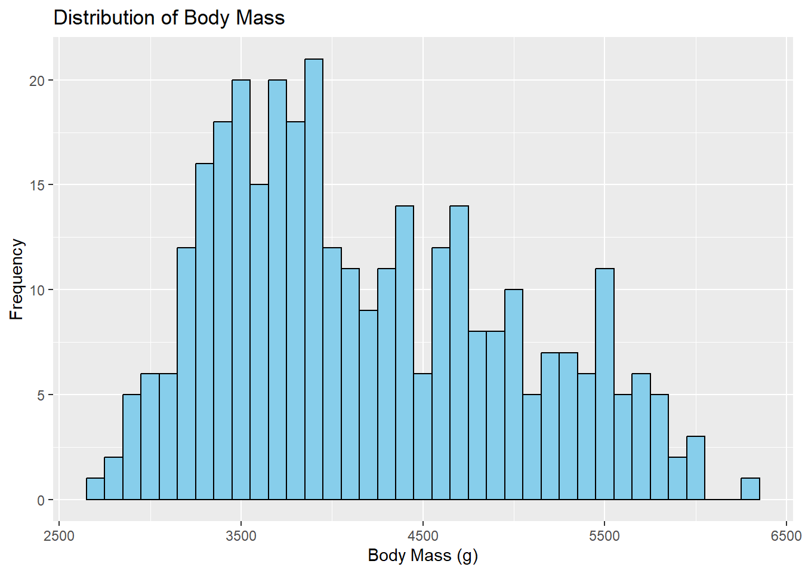
# Correlation matrix
cor_matrix <- cor(penguins_clean[, c("bill_length_mm", "bill_depth_mm", "flipper_length_mm", "body_mass_g")])
print(cor_matrix) bill_length_mm bill_depth_mm flipper_length_mm body_mass_g
bill_length_mm 1.0000000 -0.2286256 0.6530956 0.5894511
bill_depth_mm -0.2286256 1.0000000 -0.5777917 -0.4720157
flipper_length_mm 0.6530956 -0.5777917 1.0000000 0.8729789
body_mass_g 0.5894511 -0.4720157 0.8729789 1.0000000# Pairwise scatter plots
pairs(penguins_clean[, c("bill_length_mm", "bill_depth_mm", "flipper_length_mm", "body_mass_g")])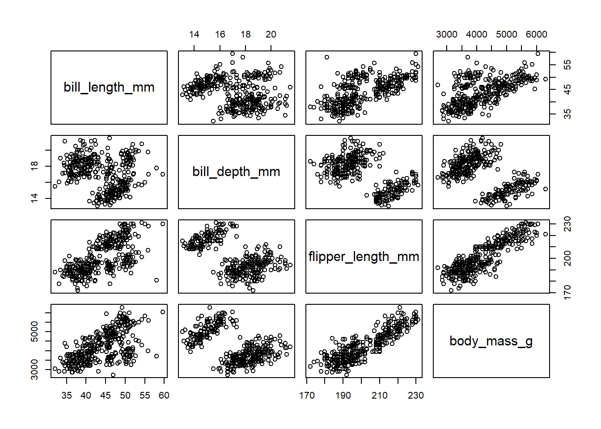
# Additional EDA steps can be added as needed
# Save plots (optional)
#ggsave("penguins_scatter.png", plot = last_plot(), width = 8, height = 6, dpi = 300)
#ggsave("penguins_boxplot.png", plot = last_plot(), width = 8, height = 6, dpi = 300)
#ggsave("penguins_histogram.png", plot = last_plot(), width = 8, height = 6, dpi = 300)
# End of script# Load libraries
library(palmerpenguins)
library(tidyverse)
# Load penguin data
penguins <- palmerpenguins::penguins
# Check for missing values
summary(penguins)
# Handle missing values (consider imputation or removal based on analysis needs)
# This example removes rows with missing values
penguins <- na.omit(penguins)
# Explore data distribution
penguins %>%
group_by(species) %>%
summarise(mean_bill_length = mean(bill_length_mm),
sd_bill_length = sd(bill_length_mm))# Visualize distribution of bill length by species
penguins %>%
ggplot(aes(x = bill_length_mm, color = species)) +
geom_density(alpha = 0.5) +
labs(title = "Distribution of Bill Length by Species",
x = "Bill Length (mm)",
y = "Density") +
facet_wrap(~species)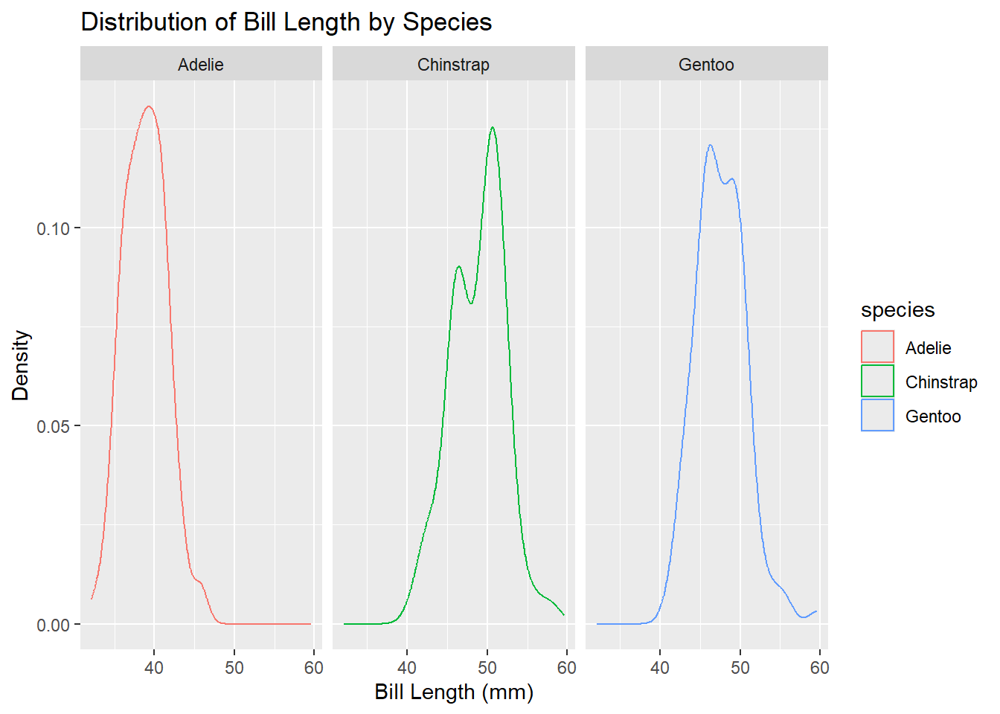
# Explore relationships between numerical variables
penguins %>%
ggplot(aes(x = bill_depth_mm, y = flipper_length_mm, color = species)) +
geom_point(alpha = 0.5) +
labs(title = "Bill Depth vs. Flipper Length by Species",
x = "Bill Depth (mm)",
y = "Flipper Length (mm)") +
facet_wrap(~species)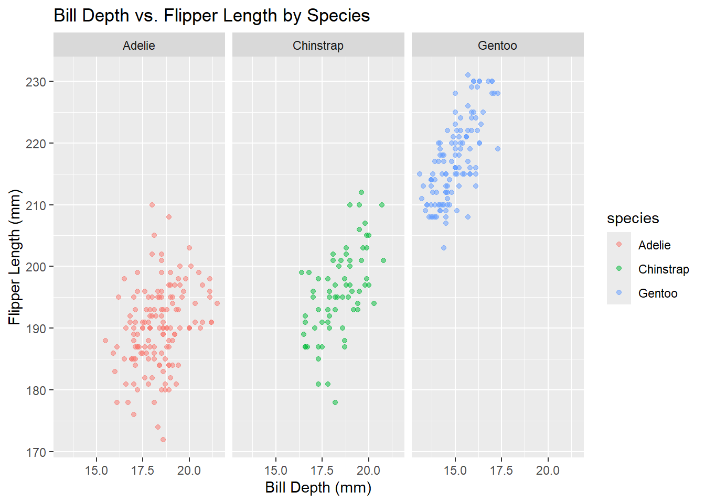
# Explore categorical relationships
penguins %>%
ggplot(aes(x = island, fill = species)) +
geom_bar(stat = "count") +
labs(title = "Number of Penguins by Island and Species",
x = "Island",
y = "Count")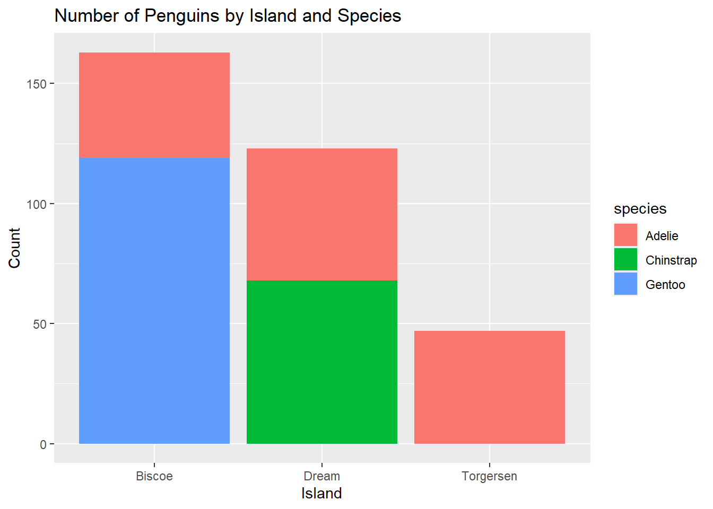
# Explore body size differences by species
penguins %>%
group_by(species) %>%
summarise(mean_body_mass = mean(body_mass_g)) %>%
ggplot(aes(x = reorder(species, mean_body_mass), y = mean_body_mass)) +
geom_col(fill = "skyblue") +
labs(title = "Average Body Mass by Species",
x = "Species",
y = "Body Mass (g)")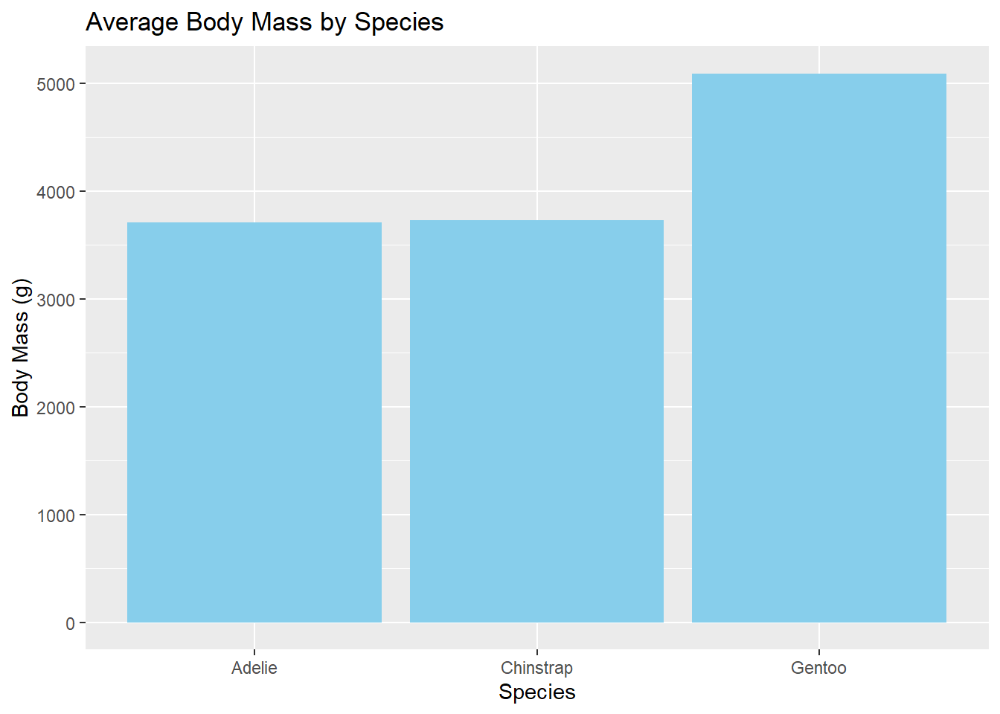
# Further exploration (consider additional plots or tests)
# * Correlation analysis between numerical variables
# * Boxplots to compare distributions
# * Hypothesis testing for group differences
# Remember to adapt and expand this script based on your specific research questions# Load required packages
library(tidyverse)
library(palmerpenguins)
# Load the penguins dataset
data <- penguins
# View the data structure
str(data)
# Check for missing values
sum(is.na(data))
# Drop rows with missing values
data <- na.omit(data)
# Data cleaning and preprocessing
data <- data %>%
mutate(species = as.factor(species),
island = as.factor(island),
sex = as.factor(sex))
# Exploratory Data Analysis
# Summary statistics
summary(data)# Visualize species distribution
ggplot(data, aes(x = species)) +
geom_bar() +
labs(title = "Species Distribution",
x = "Species",
y = "Count")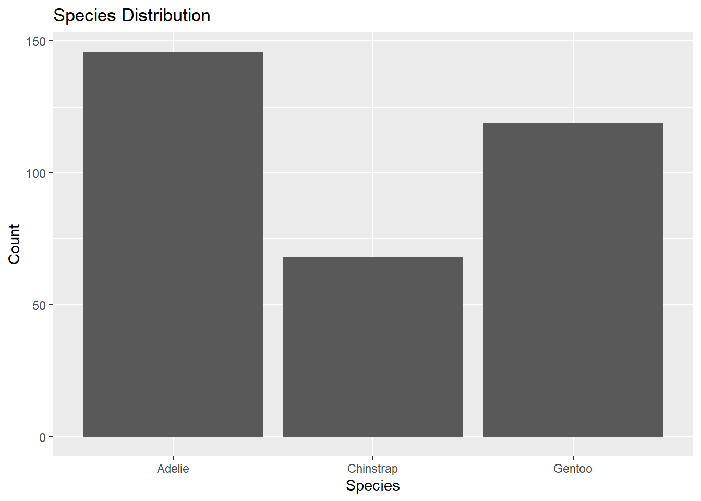
# Visualize bill length vs bill depth
ggplot(data, aes(x = bill_length_mm, y = bill_depth_mm, color = species)) +
geom_point() +
labs(title = "Bill Length vs Bill Depth",
x = "Bill Length (mm)",
y = "Bill Depth (mm)",
color = "Species")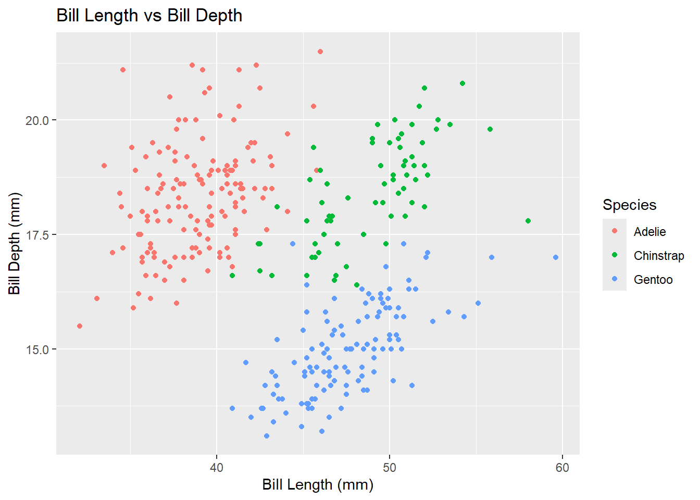
# Visualize body mass distribution
ggplot(data, aes(x = body_mass_g, fill = species)) +
geom_histogram(bins = 30, alpha = 0.6, position = "identity") +
labs(title = "Body Mass Distribution",
x = "Body Mass (g)",
y = "Count",
fill = "Species")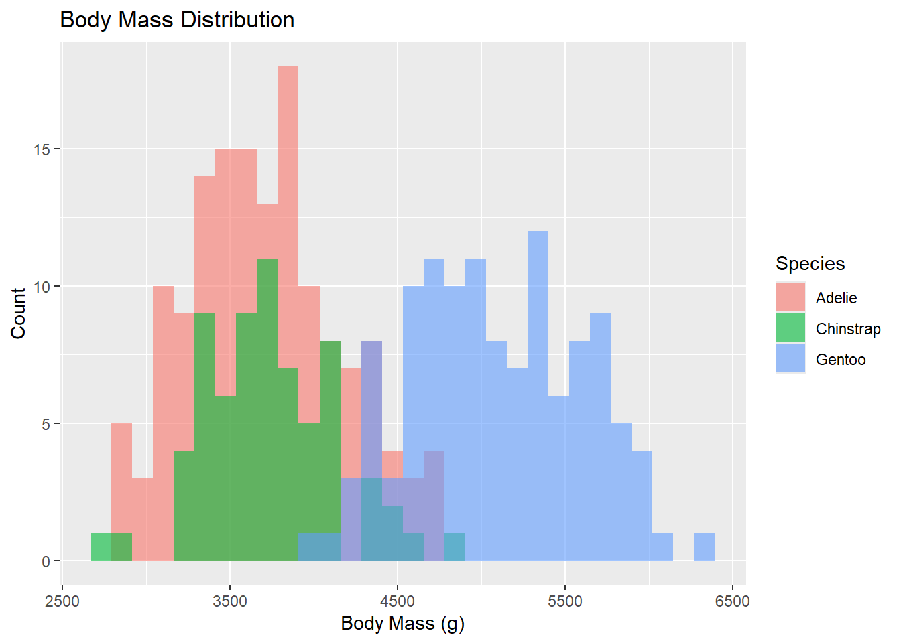
# Visualize flipper length by species and sex
ggplot(data, aes(x = species, y = flipper_length_mm, fill = sex)) +
geom_boxplot() +
labs(title = "Flipper Length by Species and Sex",
x = "Species",
y = "Flipper Length (mm)",
fill = "Sex")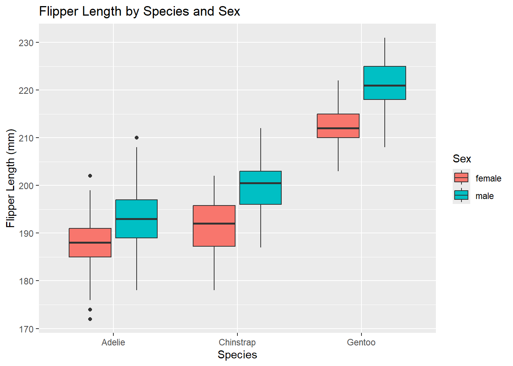
# Load necessary libraries
library(tidyverse)
library(corrplot)
# Load the penguins dataset
data("penguins", package = "palmerpenguins")
# View the first few rows of the dataset
head(penguins)
# Clean and process the data
penguins <- penguins %>%
mutate(
species = factor(species),
sex = factor(sex),
island = factor(island)
)
# Perform exploratory data analysis
# Summary statistics
summary_stats <- penguins %>%
group_by(species) %>%
summarise(
mean_bill_length = mean(bill_length_mm),
mean_bill_depth = mean(bill_depth_mm),
mean_flipper_length = mean(flipper_length_mm),
mean_body_mass = mean(body_mass_g)
)# Visualize the data
# a. Distribution of bill length
ggplot(penguins, aes(x = bill_length_mm)) +
geom_histogram(binwidth = 1, color = "black", fill = "lightblue") +
labs(title = "Distribution of Bill Length", x = "Bill Length (mm)", y = "Frequency")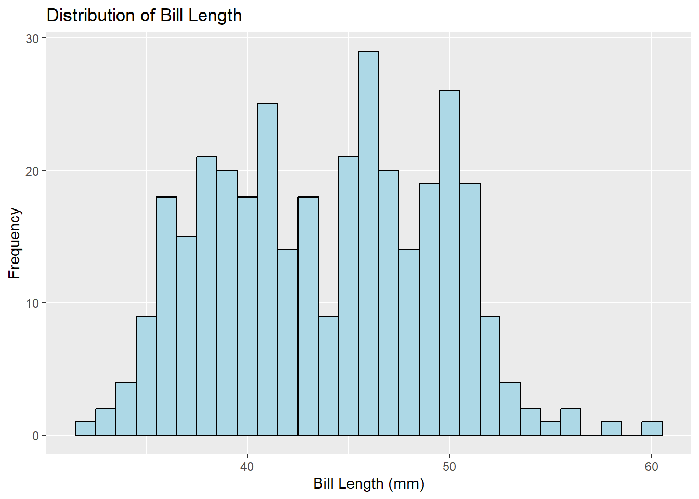
# b. Distribution of bill depth
ggplot(penguins, aes(x = bill_depth_mm)) +
geom_histogram(binwidth = 1, color = "black", fill = "lightblue") +
labs(title = "Distribution of Bill Depth", x = "Bill Depth (mm)", y = "Frequency")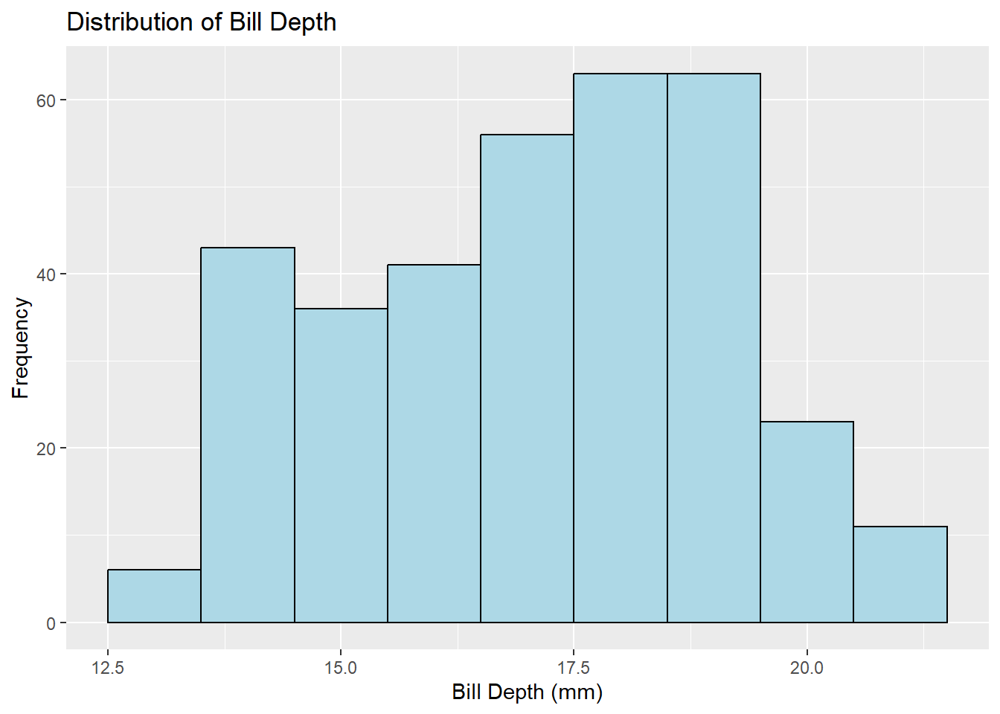
# c. Distribution of flipper length
ggplot(penguins, aes(x = flipper_length_mm)) +
geom_histogram(binwidth = 1, color = "black", fill = "lightblue") +
labs(title = "Distribution of Flipper Length", x = "Flipper Length (mm)", y = "Frequency")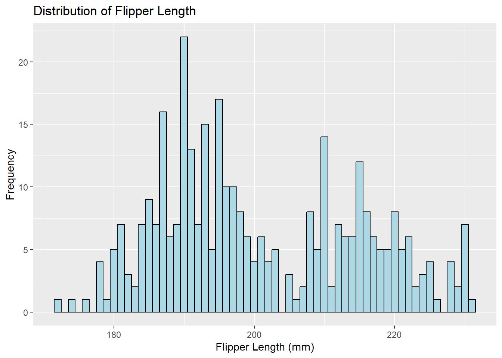
# d. Distribution of body mass
ggplot(penguins, aes(x = body_mass_g)) +
geom_histogram(binwidth = 100, color = "black", fill = "lightblue") +
labs(title = "Distribution of Body Mass", x = "Body Mass (g)", y = "Frequency")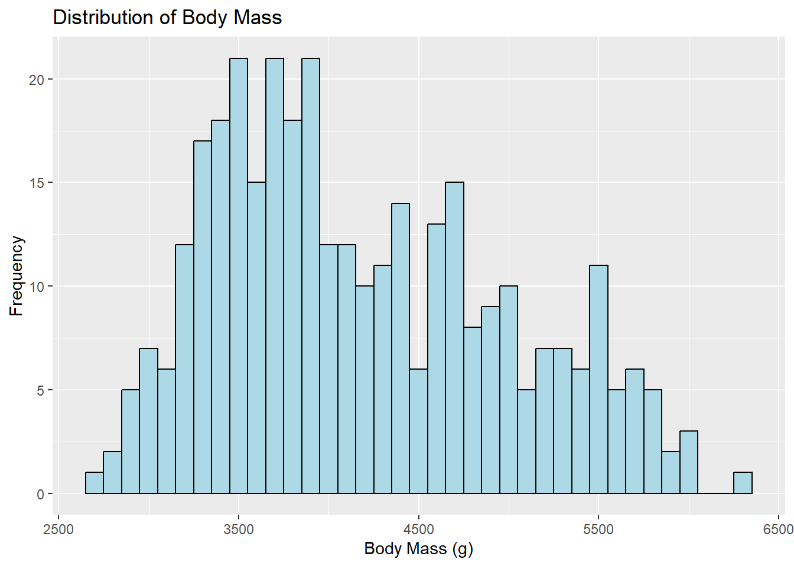
# e. Species distribution
ggplot(penguins, aes(x = species, fill = species)) +
geom_bar() +
labs(title = "Species Distribution", x = "Species", y = "Count", fill = "Species")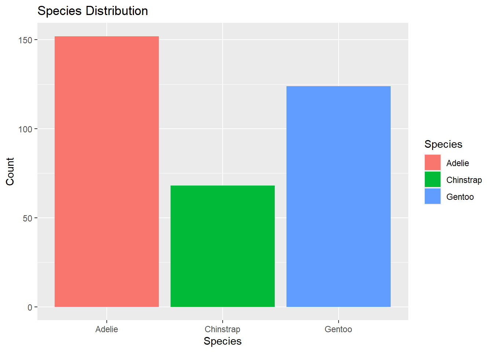
# f. Sex distribution
ggplot(penguins, aes(x = sex, fill = sex)) +
geom_bar() +
labs(title = "Sex Distribution", x = "Sex", y = "Count", fill = "Sex")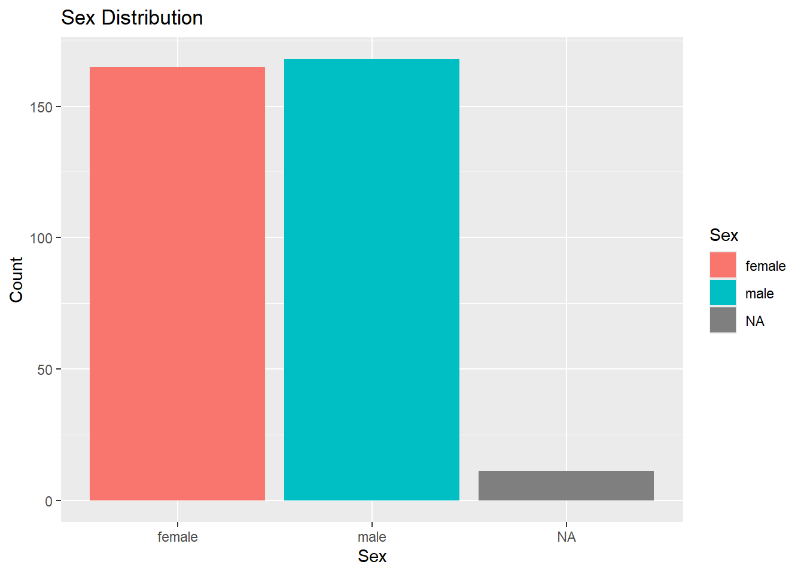
# g. Island distribution
ggplot(penguins, aes(x = island, fill = island)) +
geom_bar() +
labs(title = "Island Distribution", x = "Island", y = "Count", fill = "Island")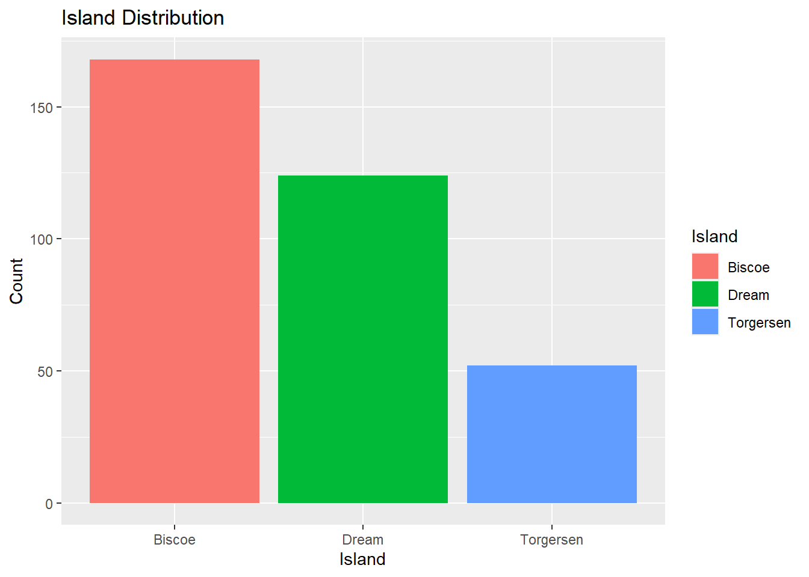
# Load the required packages
library(tidyverse)
library(ggplot2)
library(readr)
# Read the penguins dataset
data("penguins", package = "palmerpenguins")
# Explore the structure of the dataset
str(penguins)
# Summary statistics for numerical variables
summary(penguins[sapply(penguins, is.numeric)])
# Check for missing values
is.na(penguins)
# Data Cleaning and Processing
# Convert bill_length_mm and bill_depth_mm to numeric
penguins <- penguins %>%
mutate(across(c(bill_length_mm, bill_depth_mm), as.numeric))
# Handle missing values
penguins_cleaned <- penguins %>%
drop_na()
# Summary statistics after cleaning
summary(penguins_cleaned[sapply(penguins_cleaned, is.numeric)])# Exploratory Data Analysis with Plots
# Basic scatter plot of bill length vs bill depth
basic_scatter <- ggplot(penguins_cleaned, aes(x = bill_length_mm, y = bill_depth_mm)) +
geom_point() +
ggtitle("Bill Length vs Bill Depth")
print(basic_scatter)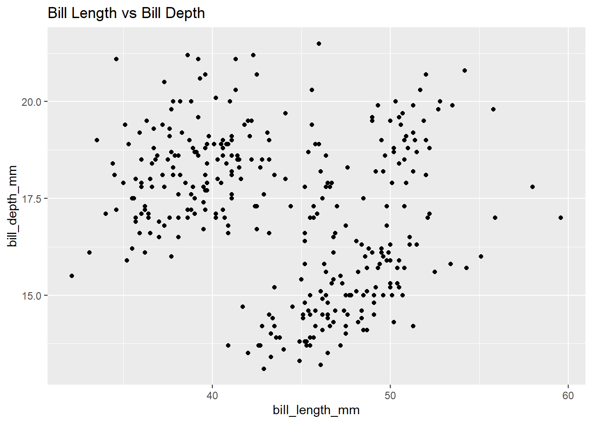
# Box plot of bill depth by species
box_plot <- ggplot(penguins_cleaned, aes(x = species, y = bill_depth_mm)) +
geom_boxplot() +
ggtitle("Bill Depth by Species")
print(box_plot)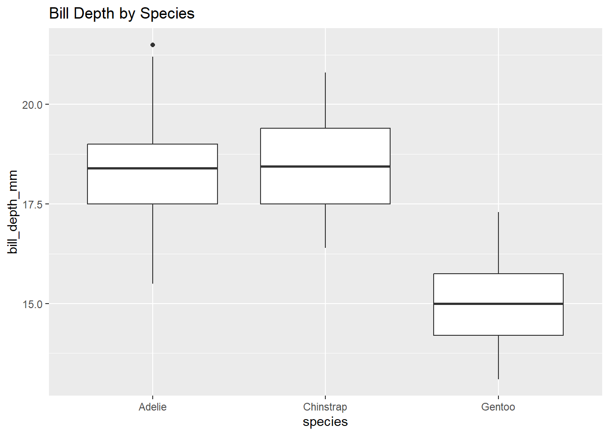
# Histogram of flipper length
histogram <- ggplot(penguins_cleaned, aes(x = flipper_length_mm)) +
geom_histogram(binwidth = 5) +
ggtitle("Distribution of Flipper Length")
print(histogram)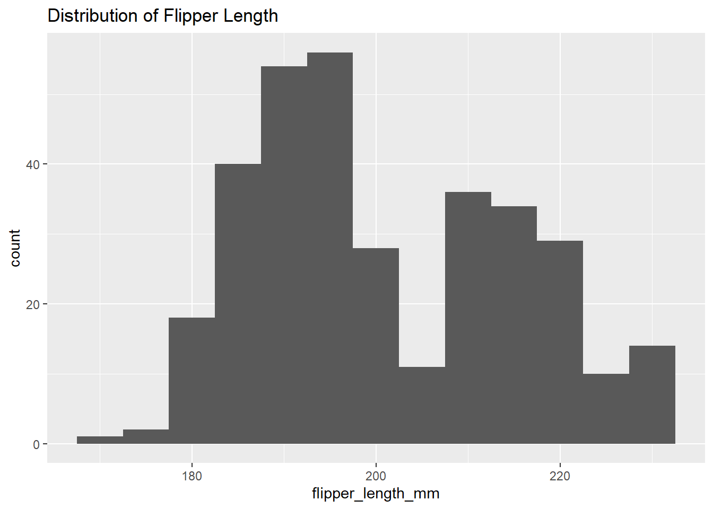
# Density plot of body mass by species
density_plot <- ggplot(penguins_cleaned, aes(x = body_mass_g, fill = species)) +
geom_density(alpha = 0.7) +
ggtitle("Density Plot of Body Mass by Species")
print(density_plot)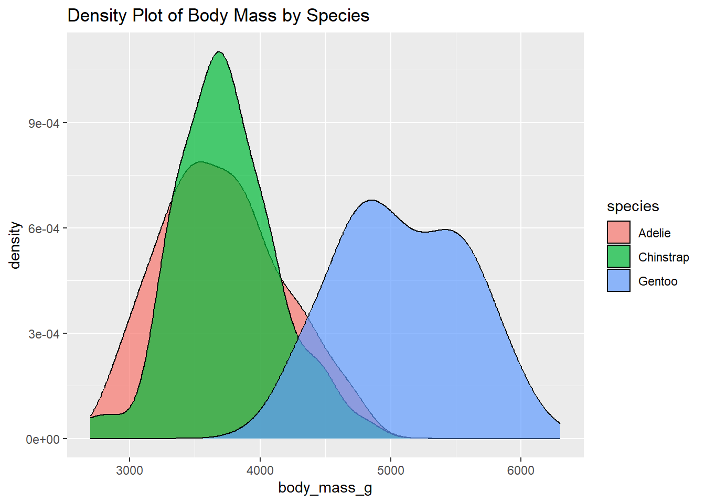